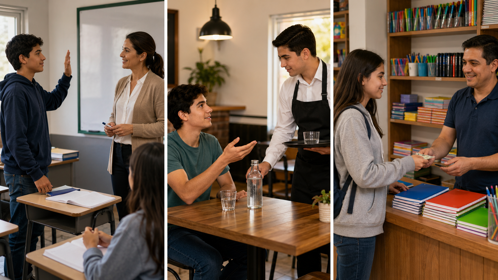

Home task: 10-15 minutes
Useful Modals: Can, Will, May
10mo EGB | Module 3 | Three real places: restaurant, school, and shopping.
Short English for real situations. / Inglés corto para situaciones reales.
Instructions / Instrucciones
English: Look at the image, listen to the audio, read the short text, and complete the notebook task.
Español: Mira la imagen, escucha el audio, lee el texto corto y completa la tarea en tu cuaderno.
Do not worry if you do not understand everything. We will use your words and questions in class.
Real Source / Fuente real
Main classroom source: English Module 3, pages 13, 21, 25 and 32: modals may, will, can + base verb.
Real support link for can vs. may: Grammar Monster - Can or May?
Real support link for requests and permission: EC English - Requests and Permission
Language note: Use may for polite permission, can for informal requests or ability, and Will you...? to ask another person to do something. Use I will... for a simple future decision.
This page is extra support for class, not extra homework.
Image Support / Apoyo visual

Audio Support / Apoyo de audio
Teacher read-aloud script: Listen. At school, Ana says, May I ask a question, please? In a restaurant, she says, Can I have water, please? She also says, Will you bring the menu, please? In a shop, she says, I will buy this notebook. These sentences help us speak politely in real situations.
At home: Listen one or two times. / En casa: Escucha una o dos veces.
Adapted Reading / Lectura adaptada
Three Places, Three Useful Sentences
Today Ana practices useful English in three places. First, she is at school. She does not understand one exercise, so she raises her hand and says, "May I ask a question, please?" The teacher says, "Yes, you may." Later, Ana goes to a small restaurant with her cousin. She is thirsty and says, "Can I have water, please?" Then she asks the waiter, "Will you bring the menu, please?" After class, Ana goes to a shop. She needs a notebook for English. She looks at the price and says, "I will buy this notebook." Ana uses short English, but it is useful. She can ask for help, ask for permission, make a polite request, and say a simple future decision.
Vocabulary / Vocabulario
Can I have water, please?
May I ask a question?
I will buy a notebook.
Will you bring the menu, please?
May I go to the bathroom?
What is the price?
Notebook Evidence / Evidencia en cuaderno
In your notebook / En tu cuaderno:
- Write 3 words from the page.
- Write 1 useful sentence with can, will, or may.
- Write 1 question for class in Spanish or English.
Pair Preparation / Preparación en pareja
Choose one place: restaurant, school, or shop.
Prepare one line: Can I... / May I... / Will you...? / I will...